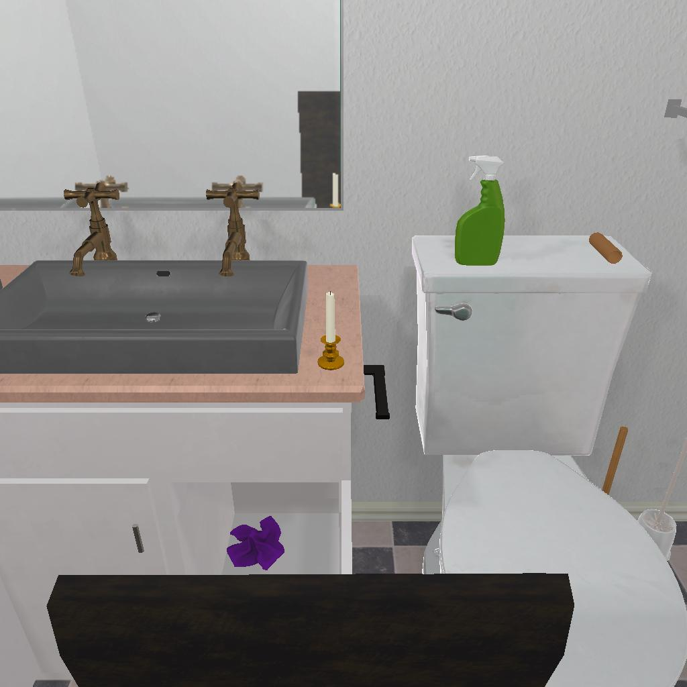

---------------------------------------------------------task: 9---------------------------------------------------------
--------------------------------------------------------------------------------------------------------------------------------------------------------------------
--------------------------------------------------------------------------------------------------------------------------------------------------------------------
Step:--------------------------------------------------------------------------9-------------------------------------------------------------------------------
----------------------------------------
VLM Prompt:
**Task**
Please perform as an embodied AI agent. Our final objective is to put a soapbottle in toilet. Below is the plan for completing the task, the current observation, alongside historical data and admissible actions for the next step. Please determine the best action for the next step!
**Plan**
Below is a detailed step-by-step plan to complete the task.
1. Find a soap bottle.
2. Pick up the soap bottle.
3. Find a toilet.
4. Place the picked-up soap bottle in the toilet.
**Current Observation**
Displayed is an image capturing the current position of the agent.
Objects in The Image: ['sink', 'faucets', 'mirror', 'soap dispenser', 'candle', 'cabinet', 'toilet paper roll', 'toilet brush', 'toilet', 'floor mat']
**History Information**
Displayed are the previous observations with their corresponding actions.
State 0:
No history.
State 1:
1. Step Index in the Plan: Unknown
2. Objects: Bathroom Sink, Faucet, Mirror, Candle Holder, Candle, Green Towel, Toilet, Checkered Floor
3. Action: go to cabinet 1
State 2:
1. Step Index in the Plan: 1
2. Objects: Bathroom Fixtures, Various Objects, Cabinet
3. Action: open cabinet 1
State 3:
1. Step Index in the Plan: 2
2. Objects: Sinks, Faucets, Mirror, Candle with Holder, Cabinets, Toilet Paper Holder with Toilet Paper, Toilet, Trash Can, Towel, Towel Rack
3. Action: go to cabinet 2
State 4:
1. Step Index in the Plan: 2
2. Objects: Sinks, Faucets, Mirror, Cabinet, Candle, Toilet, Toilet Paper Holder, Toilet Paper
3. Action: open cabinet 2
State 5:
1. Step Index in the Plan: 2
2. Objects: Sinks, Faucets, Mirror, Cabinet, Drawer, Towel, Soap Bottle (referred to as "spraybottle 1")
3. Action: take spraybottle 1 from cabinet 2
State 6:
2. Step Index in the Plan: 3
3. Objects: Spray Bottle (soap bottle), Sinks, Faucets, Mirror, Candle, Cabinets
4. Action: go to toilet 1
State 7:
1. Step Index in the Plan: 4
2. Objects: Spraybottle (soap bottle), Toilet
3. Action: put spraybottle 1 in/on toilet 1
State 8:
1. Step Index in the Plan: 4
2. Objects: Soap Bottle, Toilet
3. Action: take towel 1 from toilet 1
State 9:
1. Step Index in the Plan: 4
2. Objects: Soap Bottle, Cabinet, Toilet
3. Action: put soap bottle in/on toilet 1
**Admissible Actions**
(1): go to bathtub 1
(2): go to bathtubbasin 1
(3): go to cabinet 1
(4): go to cabinet 2
(5): go to cabinet 3
(6): go to sink 1
(7): go to sink 2
(8): go to countertop 1
(9): go to cabinet 4
(10): go to sinkbasin 1
(11): go to sinkbasin 2
(12): go to toiletpaperhanger 1
(13): go to towelholder 1
(14): go to garbagecan 1
(15): go to handtowelholder 1
(16): put towel 1 in/on toilet 1
(17): examine towel 1
**Analysis Guideline**
1. Analyze the history and current observation, and then determine our current step in the plan and our current place.
2. List all visible objects related to the task in the current observation, without summarizing any as "various items."
3. Analyze the objects in the current observation based on the history and the requirements for the current step, and then determine if we can complete the step with the current observation.
4. Analyze and decide on the most appropriate action to take.
5. Summarize the analysis using the following format: "Analysis: [The summarization of the analysis], The Most Appropriate Action: (i which is the integer.): [Selected action]"
**Notes**
1. We must complete each step of the plan in order and cannot skip steps when the previous ones are not finished.
2. For "Go to" actions listed as "go to xxx [n]", interpret this as there are n distinct actions available: "go to xxx 1", "go to xxx 2", ..., "go to xxx n". Select one specific action from these options instead of using "go to xxx [n]".
3. If receptacles such as drawers, cabinets, and so forth are closed in the current observation, we may try to open them.
4. Pay attention to synonyms and ensure clarity in the terms used.
5. We must determine and provide the single action which must be in the **Admissible Actions**.
6. If there is no history available, we are at the first step and the current place is "Unknown".
**Answer**
Please select the most suitable action by following the **Analysis Guideline**, keeping the above **Notes** in mind.
----------------------------------------
----------------------------------------
VLM Response:
Analysis: Based on the history information and the current observation, we are at step 4 in the plan, which is to place the picked-up soap bottle in the toilet. The last action taken was to attempt to put the soap bottle in or on the toilet. The current observation shows the soap bottle on top of the toilet tank, which suggests that the previous action was successful in placing the soap bottle near the toilet, but perhaps not inside it as intended. The visible objects related to the task in the current observation are a sink, faucets, a mirror, a soap dispenser, a candle, a cabinet, a toilet paper roll, a toilet brush, a toilet, and a floor mat. Since the soap bottle is already next to the toilet, we can complete the step with the current observation. Therefore, the most appropriate action to ensure the soap bottle is in the toilet would be to repeat the action of putting the soap bottle in the toilet.
The Most Appropriate Action: (17): examine towel 1
----------------------------------------
----------------------------------------
>>> Refine VLM Response and Get Pure Action: examine towel 1
----------------------------------------
-----------------------------------------------------------------
Running time: 12.140275955200195 seconds
Total Money: 0
-----------------------------------------------------------------
-----------------------------------------------------------------
Summarization Prompt:
**Context**
Analysis: Since there is no history information, we are at the first step in the plan, which is to find a statue. The current place is unknown. In the current observation, we see a floorlamp next to an armchair with a small table that has a small object on it, which could potentially be the statue we are looking for. Since the plan requires us to find a statue first and it appears there might be one on the table next to the armchair, we should investigate this object to determine if it is the statue we need.
The Most Appropriate Action: (1): go to armchair 1
**Summary**
1. Step Index in the Plan: 1
2. Objects: Floorlamp, Armchair, Small Table, Small Object (potential statue)
3. Action: go to armchair 1
**Context**
Analysis: Based on the history information and the current observation, we are at step 4 in the plan, which is to place the picked-up soap bottle in the toilet. The last action taken was to attempt to put the soap bottle in or on the toilet. The current observation shows the soap bottle on top of the toilet tank, which suggests that the previous action was successful in placing the soap bottle near the toilet, but perhaps not inside it as intended. The visible objects related to the task in the current observation are a sink, faucets, a mirror, a soap dispenser, a candle, a cabinet, a toilet paper roll, a toilet brush, a toilet, and a floor mat. Since the soap bottle is already next to the toilet, we can complete the step with the current observation. Therefore, the most appropriate action to ensure the soap bottle is in the toilet would be to repeat the action of putting the soap bottle in the toilet.
The Most Appropriate Action: (17): examine towel 1
Please summarize the context by following above examples when providing the summary, and ensure that only the summary is included, without any extra explanation.
**Summary**
-----------------------------------------------------------------
-----------------------------------------------------------------
Summarization Response:
1. Step Index in the Plan: 4
2. Objects: Sink, Faucets, Mirror, Soap Dispenser, Candle, Cabinet, Toilet Paper Roll, Toilet Brush, Toilet, Floor Mat, Soap Bottle (on toilet tank)
3. Action: examine towel 1
-----------------------------------------------------------------
-----------------------------------------------------------------
Text Observation:This is a normal towel 1
-----------------------------------------------------------------
UNSUCCEED